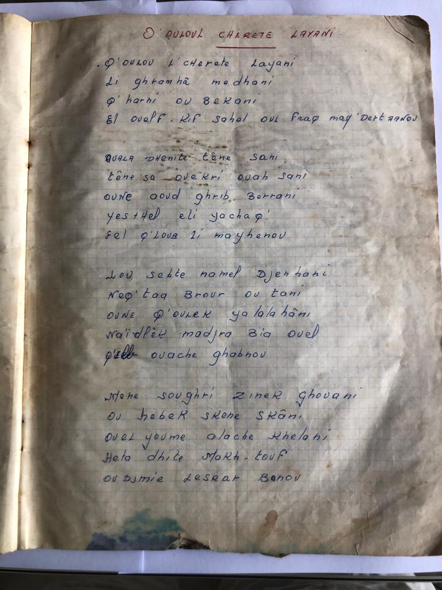

Decouvrir le Chaabi a travers deux morceaux
Cette selection de chansons abordent différentes facettes du genre Chaabi. Le premier morceau (Chihlet Laayani) se penche l'adaptation plus récente d'une chanson cubaine, et le second morceau (Khezna Sghira) sur l'ancienne poésie religieuse algérienne. Cette page présente les différentes façons dont ces pièces ont été interprétées au fil du temps, offrant ainsi une compréhension élémentaire mais variée, historique et plutôt interactive du chaabi algérien.
Chihlet Laayani
Description: Chihlet Laayani est une chanson bien connue du répertoire de la musique chaâbi algérienne. Le texte a été écrit par Abdelhakim Garami en 1958, mais il s'agit d'une adaptation de la chanson Quizás Quizás Quizás, écrite en 1947 par le compositeur cubain Osvaldo Farrés. Cette chanson est devenue particulièrement populaire grâce à l'interprétation emblématique d'Abdelkader Chaou. Il s'agit d'une chanson d'amour poignante dans laquelle le chanteur exprime sa douleur face à la séparation et à l'amour non réciproque.
Interprétation 1: Mohamed Zerbout
L'interprétation de Mohamed Zerbout en 1958 est la première version enregistrée de ce morceau. Zerbout est né en 1936 dans la Casbah d'Alger, et apprend tout au long de son enfance à jouer de la percussion et plus tard de la mandole en fréquentant les mariages locaux et en côtoyant des artistes chaabi. Dans les années 1950, il produit plusieurs disques, dont Chihlet Laayouni, avant de s'exiler en France.
Interprétation 2: Abdelkader Chaou
L'interprétation d'Abdelkader Chaou est l'interprétation la plus célèbre de ce morceau. Chaou est né dans la Casbah d'Alger en 1941 et continue à se produire jusqu'à aujourd'hui.
Transcription de la chanson 'Chihlet Laayani' :
Une photo d'une page du cahier de Ahmed Mezoughem. Cette page contient la transcription de la chanson 'Chihlet Laayani'. Ce cahier date des années 60-70 et contient des paroles de differentes chansons algeriennes par des artistes differents.
Abdel Kader
Description: Une chanson qui rend hommage à Abdel Kader, un héros emblématique de l'Algérie, célèbre dans le répertoire Chaâbi.
Interprétation 1
Une interprétation vibrante de "Abdel Kader" par le groupe Cheb Khaled.
Interprétation 2
Une version en live, avec une énergie incroyable.
Paroles (Arabe/Algérien) :
عبد القادر يا بو طيب...
Traduction :
Abdel Kader, ô homme de bien...